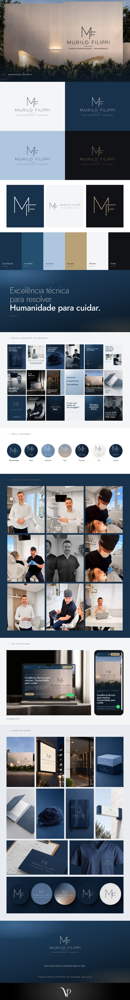

Case 01 · Cirurgia
A reputação já existia. A marca ainda não mostrava.
Cirurgião bucomaxilofacial em Porto Alegre, conhecido por indicação. A virada tornou visível, antes do primeiro atendimento, a confiança que ele já tinha no consultório.
Apresentação da marca em stories